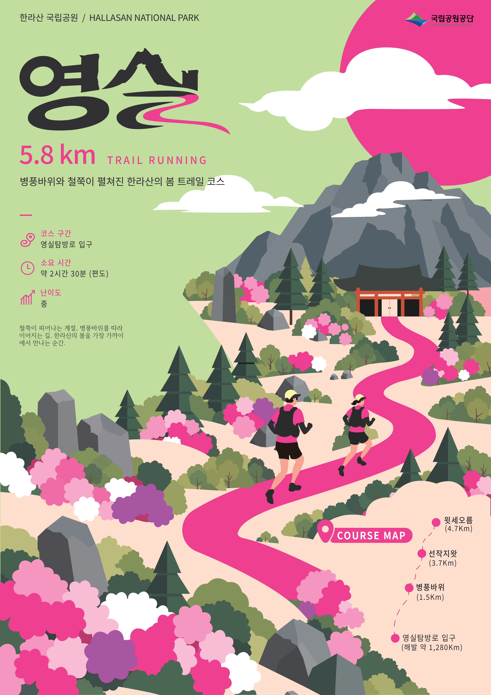
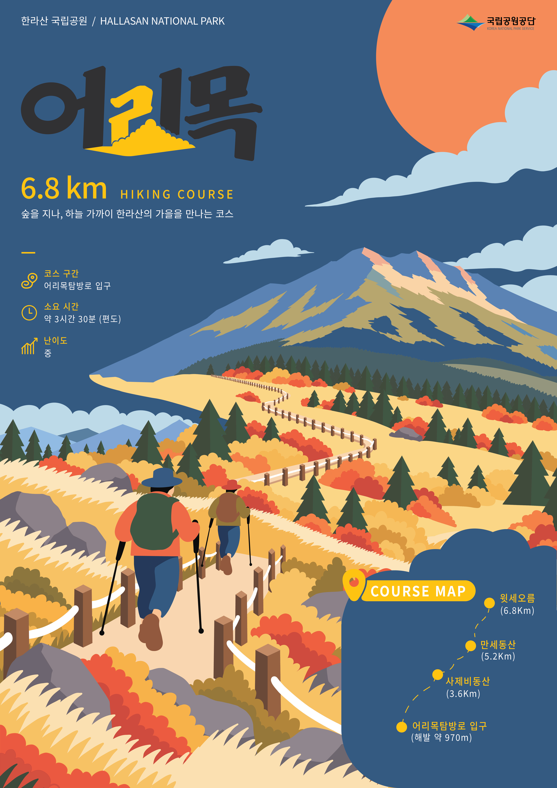

overview
본 포스터는 철쭉이 만개한 한라산 영실 코스의 봄 정취와 트레일 러닝을 현대적인 그래픽으로 재해석한 작품이다. 병풍바위에서 선작지왓 으로 이어지는 지형의 흐름을 분홍빛 철쭉과 싱그러운 봄의 색감으로 시각화하였다. 영실 탐방로가 지닌 고유한 계절감과 트레일 러닝의 역 동적인 에너지를 직관적인 시각 경험으로 전달하는 것을 지향한다.

overview
본 포스터는 한라산 어리목 코스의 깊어가는 가을 정취와 하이킹의 여정을 현대적인 그래픽 스타일로 재해석한 작품이다. 숲길을 지나 사제 비동산과 만세동산, 윗세오름으로 이어지는 완만한 능선의 흐름을 붉은 단풍과 황금빛 억새의 조화로운 색채 대비로 시각화하였다. 단순 한 풍경 재현에 머무르지 않고, 어리목 탐방로가 지닌 고유한 계절감과 산행의 활력을 직관적인 시각 경험으로 확장하는 것을 지향한다.